Study1: Pathways to Virality
Deliverable 1: The diffusion of shared URLs and interaction network among multiple platforms
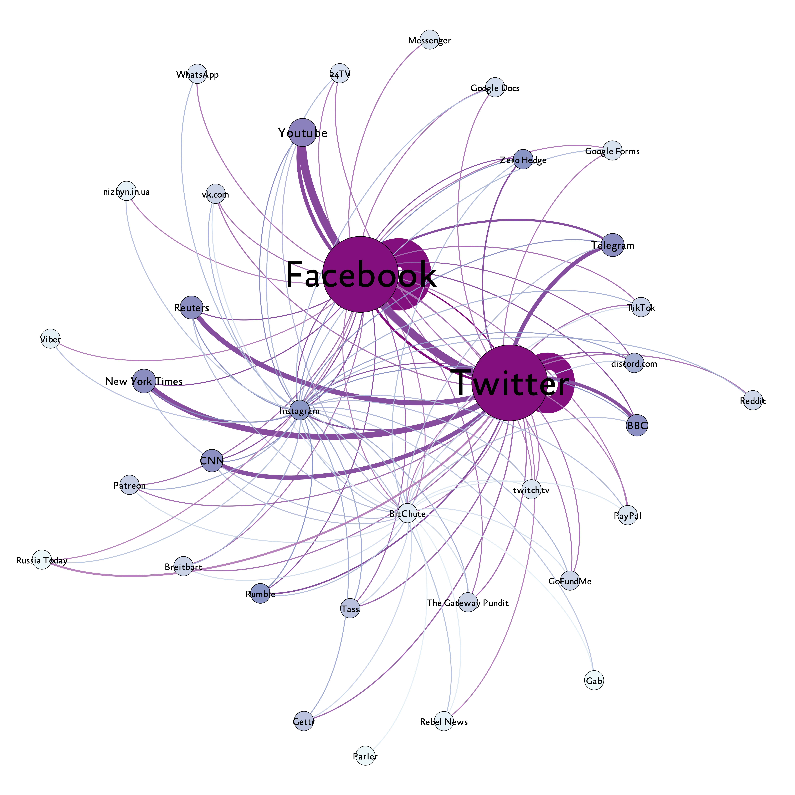- Network attributes:
-
· Nodes: mainstream social media, niche social media, mainstream media, misinformation media, fundraising sites; size and color based on degree centrality
-
· Edges: the number of URLs linking one platform to the other, width and color based on weights
- Data and Method:
-
· Posts with links related to Russian-Ukraine war from February to April 2022 on 4 platforms: Facebook (9.03M links), Twitter (8.16M links), Instagram (47K links) and Bitchute (3K links)
-
· Links in the posts are identified, extracted, expanded, parsed based on domain name, counted and ranked in each platform
- Results:
-
· Facebook and Twitter are the main hubs of URLs diffusion, with intra-platform links (Facebook 83.5%, Twitter 34.4%) much more than cross-platform links
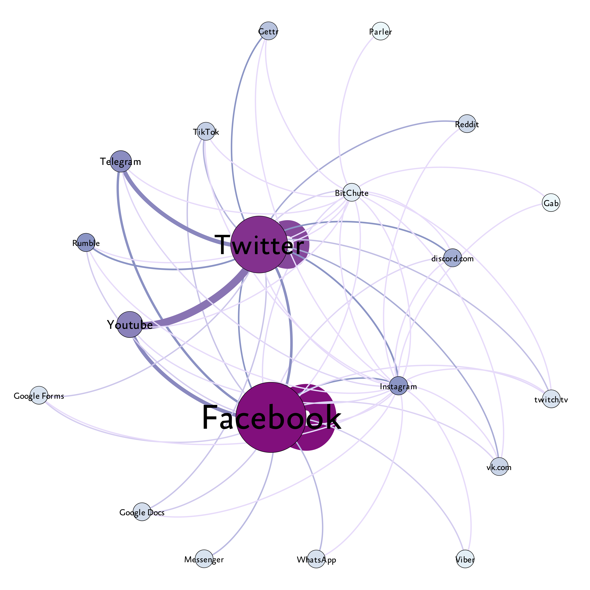
Social Media Network (Mainstream and Niche Platforms)
Niche platforms like Rumble, Gettr, Parler, Gab, Discord, Viber are identified. Messages originated from fringe communities can sometimes get mainstream traction. They account for roughly 2.7%, 9.1%, 36.6% and 5.6% of all links in Facebook, Twitter, BitChute and Instagram.
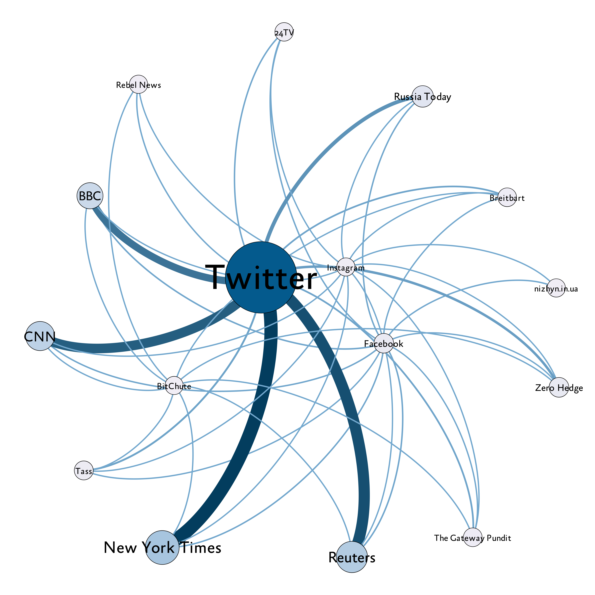
Media Network (Mainstream and Misinformation Media Sites)
Misinformation sites like The Gateway Pundit, Rebel News, Zero Hedge and Breitbart are identified. Drawing from the list of low-credibility news sources from iffy.news, links to misinformation sites took up of 0.20% and 0.58% of all Facebook and Twitter links, respectively. Top low credibility sites are Rumble, ria.ru, Gettr, sputniknews, Sputnik News.
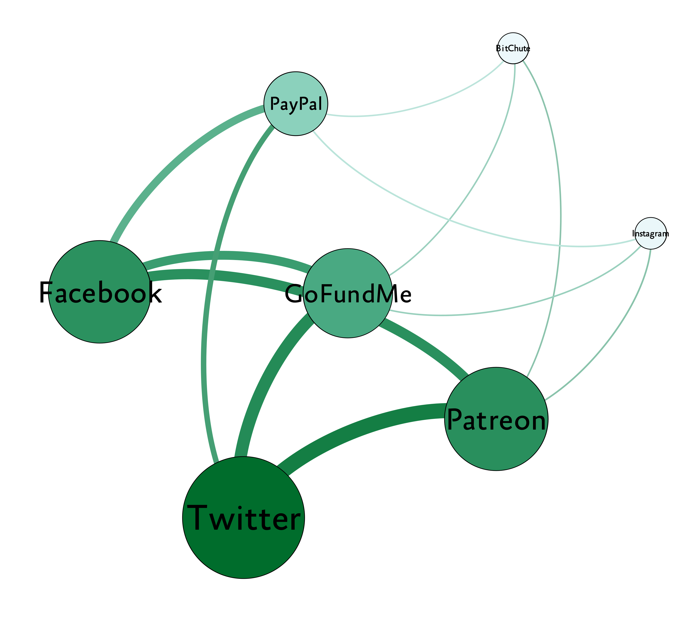
Fundraising Sites
Fundraising sites like Patreon, PayPal and GoFundMe are identified. Facebook and Twitter are the main venues for fundraising activities, accounting for 99.3% of all links shared.
Deliverable 2: The diffusion of viral URLs across platforms and their growth and relation over time
Method: Granger causality tests
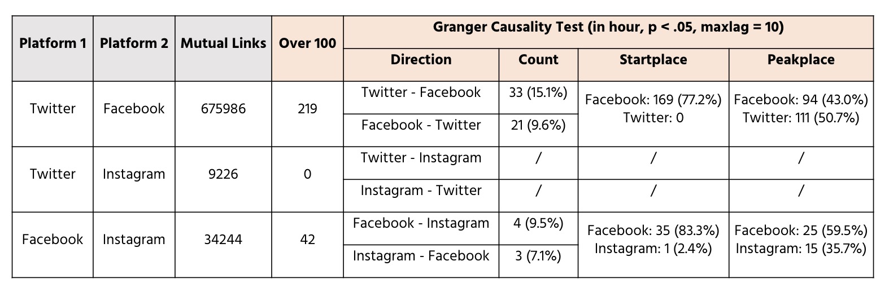- Data Processing:
-
· Mutual links with over 100 shares on Twitter, Facebook and Instagram
-
· Time frame: from the first appearance to the second peak
-
· Unit of analysis: hour
-
· Identify the place where first appearance and the peak occur
-
· Perform granger causality test within the selected time frame
-
· Check if the data is stationary before testing
- Results:
-
· Most of the links (over 70%) starts from Facebook, then diffusing to other platforms
-
· News page, fundraising sites, online support pages and petition links tend to gain more cross-platform diffusion and virality
-
· Multiple peaks are identified in the temporal evolution of some of the most viral links, indicating a long-lasting effect
Deliverable 3: The diffusion, contents and temporal evolution of Google Docs and Google Forms
Methodology of Downloading Images from Twitter dataset
- Extract domain subset from the Twitter and Facebook data sets
- Look at top 50 most frequent links from each data set
- Qualitatively classify each link into categories
-
Google Forms
- Extract domain subset from the Twitter and Facebook data sets
- Look at top 50 most frequent links from each data set
- Qualitatively classify each link into categories
-
Google Docs
- Extract domain subset from the Twitter and Facebook data sets
- Look at top 50 most frequent links from each data set
- Qualitatively classify each link into categories
“Google Forms” Data:
-
Twitter Google Platforms
- 1358 unique Google Form Links
- 24088 instances of links
-
Facebook Google Platforms
- 8191 unique Google Form Links
- 24292 instances of links
Distrubution “Google Forms” Data:
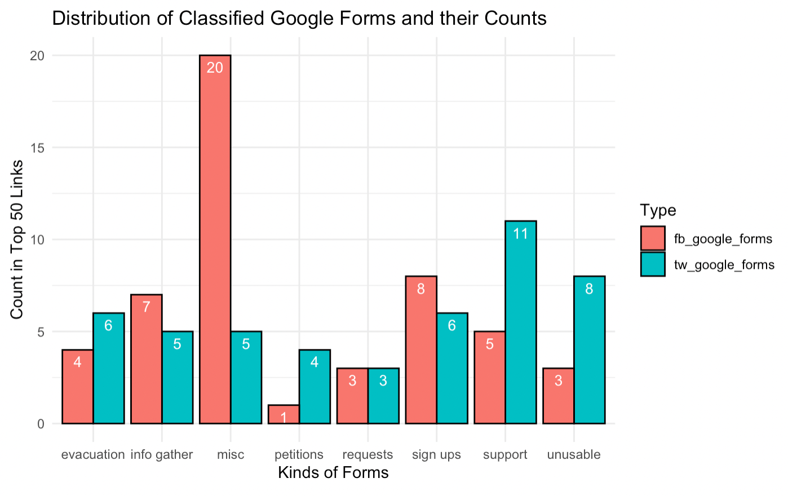 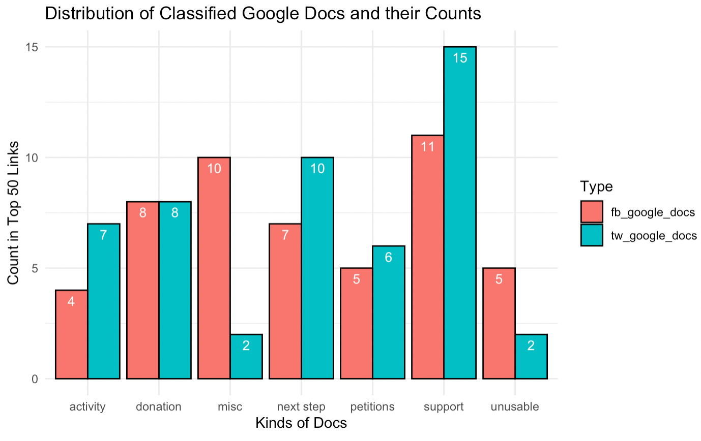Frequency “Google Forms” Data:
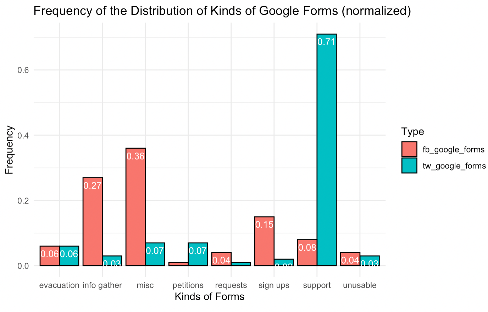 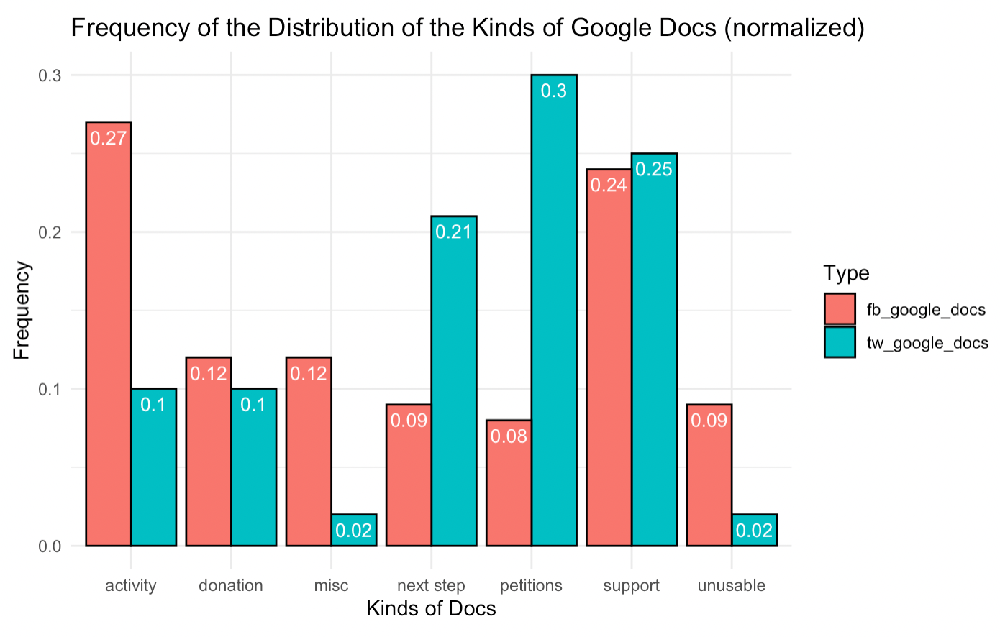Study 2: Screenshot detection
This study aims to identify and characterize the spreading of harmful screenshots across multiple platforms related to the Russia-Ukraine crisis
Deliverable 1: Download and create images
Deliverable 2: Build a supervised learning model using CNN
Data gathering:
- 1.5 million twitter images downloaded
- Generating positive examples for supervised learning using the ‘tweet-capture’ package
- Kaggle screenshots dataset
Scenarios
- First Scenario:
-
Training: Screenshot: 2808 Non-Screenshot: 2808; Testing: Screenshot: 702 Non-Screenshot: 701
-
Accuracy: 0.9885958660014256; F1: 0.9885954488465368; Recall: 0.9828815977175464; Roc-Auc: 0.9885917960097704
- Second Scenario:
-
Training: Screenshot: 3510 Non-Screenshot: 3510; Testing: Random Twitter images 100 Non-screenshots, 100 screenshots
-
Accuracy: 0.76; F1 0.6883116883116882; Recall 0.9814814814814815; Precision 0.53
-
Train the model on labeled data (5616 + 1403); Testing: kaggle screenshots
-
Out of 174 kaggle twitter screenshots, 162 are misclassified as non–screenshots even though they are screenshots. Only 12 images are predicted correctly. The result is not optimistic. 12/174 = 0.0689
-
This might be due to the fact that kaggle screenshots have very different form from the tweet-capture screenshots
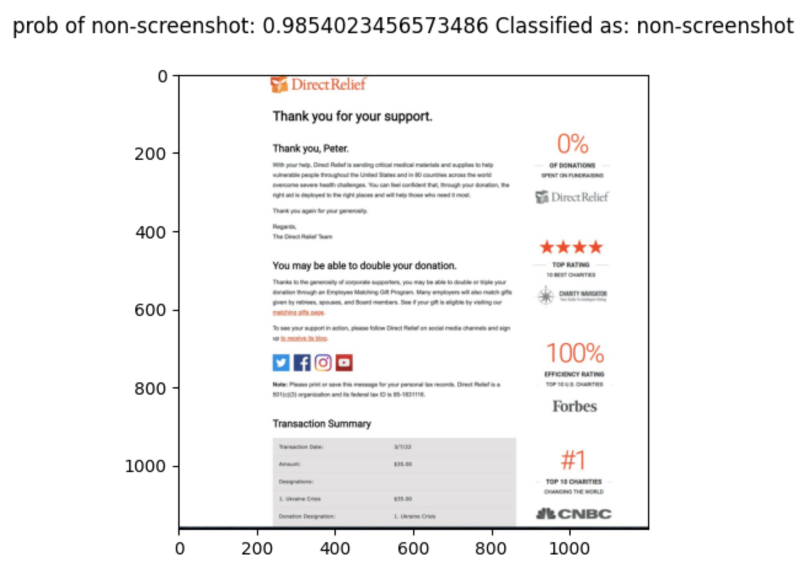
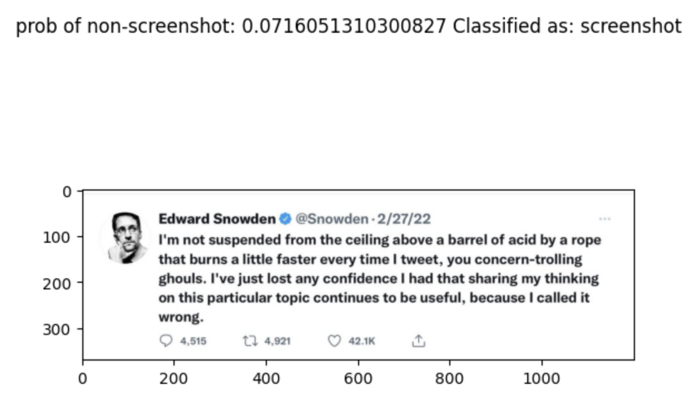
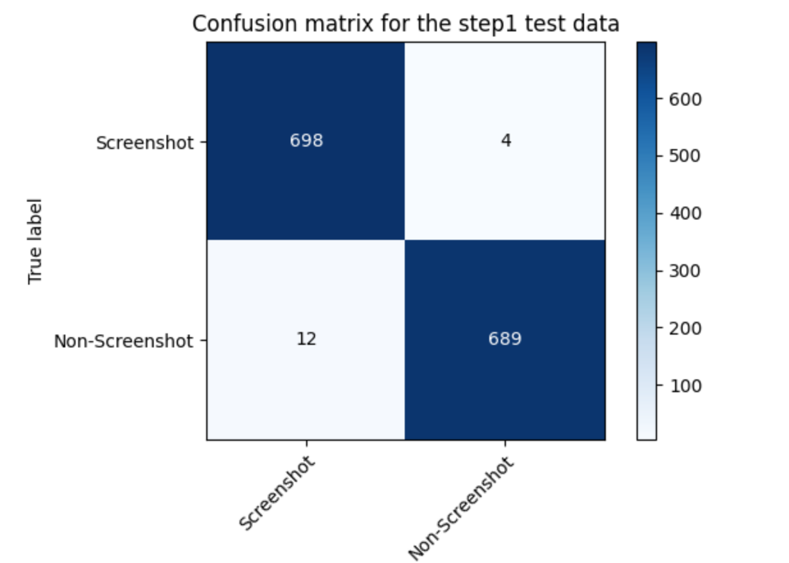 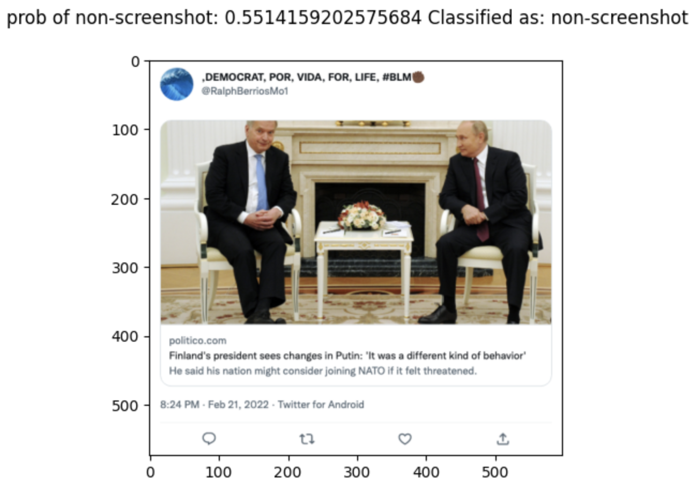 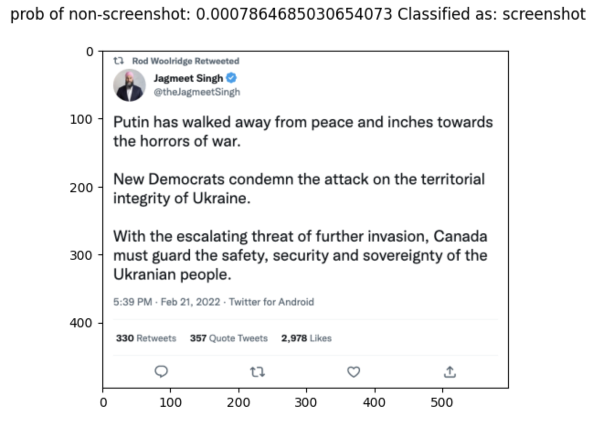
Deliverable 3: Build an unsupervised learning model
-
Methodology: Cluster images based on visual similarity to identify tweet screenshot.
- Clean and preprocess images
- Extract featuures from the images using pre-trained model VGG16
- Use PCA to reduce dimensions for visulization
- Cluster the features with K-means

Binary Clustering
Data
- Kaggle screenshot dataset
- 174 tweet screenshots
- 305 other platform screenshots
Result


- ROC AUC: 0.614
- Accuracy: 0.616
- F1: 0.535
- Precision: 0.477
- Recall: 0.609
Data
- 2000 tweet screenshots (Tweet-Capture)
- 2000 other platform screenshots (Kaggle)
Result


- ROC AUC: 0.995
- Accuracy: 0.995
- F1: 0.995
- Precision: 0.998
- Recall: 0.993
Multiclass Clustering
Data
- 500 tweet screenshots (Tweet-Capture)
- 500 other platform screenshots (Kaggle)
- 500 random images (HPC)
Result


- ROC AUC: 0.824
- Accuracy: 0.715
- F1: 0.7
- Precision: 0.7
- Recall: 0.7